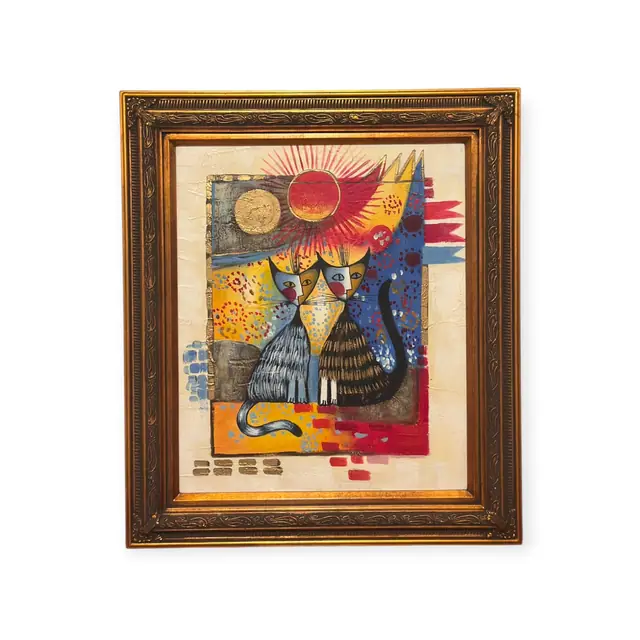
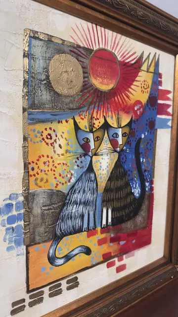
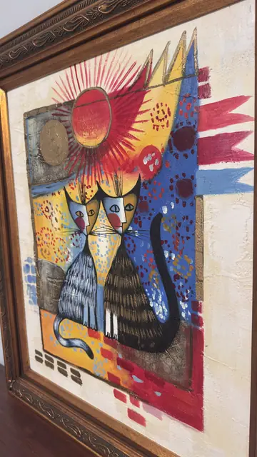
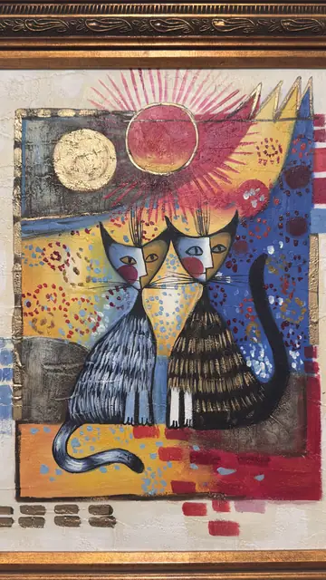

Paintings & Prints
Two Cats Beneath a Red Sun, Framed
· late 20th to early 21st century
Price Upon Request




About the Item
Two long-eared cats - one blue-grey and striped, one brown and tabby - sit shoulder to shoulder with their tails curled, staring out with wide almond eyes, red noses and neat white whiskers. Above them a crimson sun bursts into a halo of fine red rays, beside a second disc laid in real gold leaf on a slate-grey block. The ground is a patchwork of ochre, cobalt, crimson and cream squares scattered with dotted rosettes and little painted flags, all worked over a thick, deliberately cracked and scratched plaster-like surface. Warm, decorative and Mediterranean in feeling. Medium: acrylic and gold leaf on textured canvas. Condition: The fine crackle across the surface is a deliberate craquelure finish, not damage. No tears, losses or flaking seen; gold leaf passages are intact.
Details
- Creation Year:
- late 20th to early 21st century
- Dimensions:
- Height: 30.5 in (77.47 cm)
Width: 26.3 in (66.8 cm)
outside of frame - Medium:
- acrylic and gold leaf on textured canvas
- Period:
- 21St
- Condition:
- Offered in the condition shown in the photographs.
- Reference Number:
- VO-118
- Documentation:
- no certificate photographed